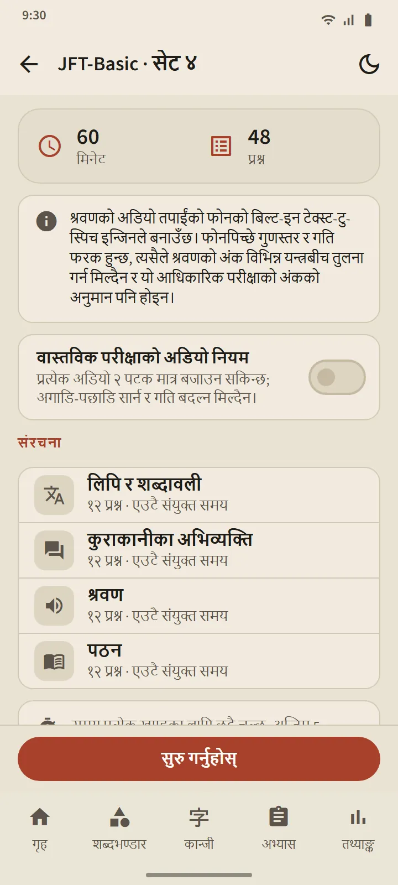
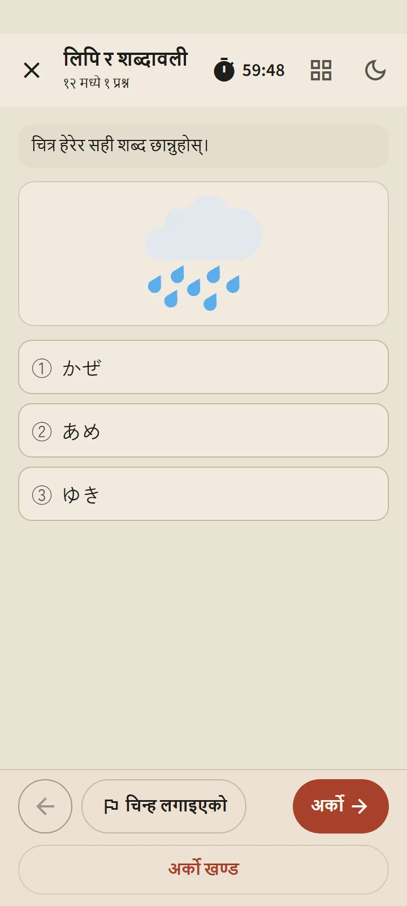
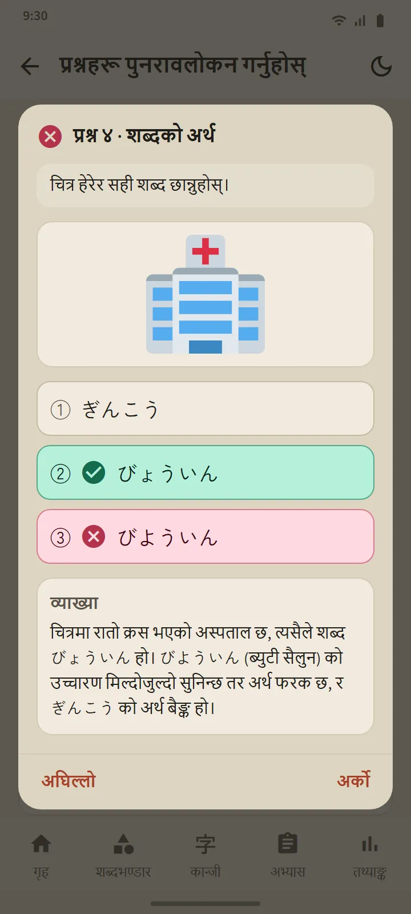

छवटा तह, 24 सेट
अभ्यास ट्याबको हरेक तहको कार्डले तहको पृष्ठ खोल्छ: सुरु गर्नुहोस् बटन, क्रमाङ्कित सेटका खाना, र इतिहास। सबै सेट पूरा भएपछि मिश्रित अभ्यास खुल्छ, जसमा तपाईंले कहिल्यै नदेखेका प्रश्न पहिला राखिन्छन्। नयाँ सेट एप अपडेटमार्फत आउँछन्।
| परीक्षा | सेट | प्रति सेट प्रश्न | समय |
|---|---|---|---|
| JFT-Basic | 8 | 48 | 60 मिनेट |
| JLPT N5 | 8 | 68 | 90 मिनेट |
| JLPT N4 | 2 | 85 | 115 मिनेट |
| JLPT N3 | 2 | 102 | 140 मिनेट |
| JLPT N2 | 2 | 107 | 155 मिनेट |
| JLPT N1 | 2 | 101 | 165 मिनेट |


प्रश्नका बनावट वास्तविक परीक्षाजस्तै
JFT-Basic का प्रश्नमा तीनवटा विकल्प (व्याकरणमा चार), सिक्नेकै भाषामा परिस्थिति र निर्देशन, र धेरै प्रश्नमा चित्र हुन्छ, आधिकारिक नमुना प्रश्नमा जस्तै। JLPT का प्रश्नमा चारवटा विकल्प, तहअनुसारको फुरिगाना, र विविध रूपका पठन पाठ हुन्छन्: छोटा कथा, मेमो, सूचना, सन्देश, इमेल र जानकारी तालिका। हरेक सेट प्रकाशनअघि जाँचिन्छ, र कुनै आधिकारिक प्रश्न नक्कल गरिएको छैन।
सुरु गर्नुअघि, ब्रिफिङ स्क्रिनले त्यो सेटको संरचना देखाउँछ: खण्ड, प्रश्नसङ्ख्या र समय। समय वास्तविक परीक्षाको जस्तै हुन्छ: JFT-Basic मा एउटै जोडिएको समय, JLPT मा हरेक खण्डको छुट्टै समय। अगाडि बढेपछि अघिल्लो खण्ड बन्द हुन्छ, परीक्षा कोठामा जस्तै। शङ्का लागेका प्रश्नमा झन्डा लगाउन, अस्थायी रूपमा बाहिर जान (घडी चलिरहन्छ), र अभ्यास ट्याबबाट फेरि सुरु गर्न सकिन्छ।


तपाईंको फोनको जापानी आवाजमा सुनाइ
सुनाइका स्क्रिप्ट तपाईंको फोनको जापानी text-to-speech इन्जिनले पढ्छ, हरेक वक्ताका लागि फरक आवाजसहित। उत्तर विकल्पहरू सुन्न मात्र पाइन्छन्, छापिएका हुँदैनन्, वास्तविक परीक्षामा जस्तै; JFT-Basic र N5 मा चित्र विकल्प हुन्छन्। “वास्तविक परीक्षाको अडियो नियम” स्विचले प्लेब्याकलाई वास्तविक परीक्षाले दिने सीमामा राख्छ: JFT-Basic मा दुई पटक, JLPT मा एक पटक।
आवाज हरेक फोनबाट आउने भएकाले गुणस्तर उपकरणअनुसार फरक हुन्छ; फोनमा अहिलेसम्म जापानी आवाज छैन भने एपले कसरी इन्स्टल गर्ने देखाउँछ, र त्यो नहुँदासम्म सुनाइ भाग छोडिन्छ।

आधिकारिक स्केलमा नतिजा, अनि हरेक प्रश्नको व्याख्या
JFT-Basic को नतिजा 10–250 रेखामा 145, 175 र 200 मा चिन्ह र तिनका दायराका नाम, A1, A2.1 र A2.2, साथै वास्तविक परीक्षामा हरेक दायरा के का लागि प्रयोग हुन्छ भन्ने सहित देखाइन्छ। JLPT को नतिजाले अङ्क दिइने हरेक खण्डलाई त्यसको न्यूनतम सीमासँग देखाउँछ, किनकि वास्तविक परीक्षामा एउटा खण्ड न्यूनतमभन्दा तल भए अनुत्तीर्ण हुन्छ। दुवैमा खण्ड र प्रश्न प्रकारअनुसार सही प्रतिशत हुन्छ।
प्रश्नहरू पुनरावलोकन गर्नुहोस् बटनले हरेक प्रश्न तपाईंको उत्तर, सही उत्तर र व्याख्यासहित खोल्छ; सुनाइका प्रश्नमा स्क्रिप्ट पनि देखिन्छ। व्याख्या 12 भाषामा उपलब्ध छ। हरेक तहको इतिहासले तपाईंका पछिल्ला प्रयास राख्छ, र अङ्कको चार्ट तथ्याङ्क ट्याबमा छ।
यी अङ्क प्रगति हेर्ने अनुमान हुन्, तपाईंको आधिकारिक नतिजाको भविष्यवाणी होइन।
ढाँचाको पाठ भएका व्याकरण प्रश्नले "यो ढाँचा सिक्नुहोस्" मार्फत सिधै त्यस पाठमा लैजान्छन्।


निःशुल्क र Premium
निःशुल्क संस्करणमा हरेक सेट खुला छ। सुरु गर्नुहोस् थिचेपछि, त्यो तहको अर्को प्रयास 7 दिन बन्द हुन्छ; अन्य तह खुला रहन्छन्, र इतिहास तथा व्याख्या कहिल्यै बन्द हुँदैनन्। बन्द हुँदा एउटा विज्ञापन हेरेर थप एक प्रयास खोल्न सकिन्छ। Premium मा विराम छैन। विज्ञापन प्रश्नका स्क्रिनमा कसैका लागि पनि कहिल्यै देखिँदैन।